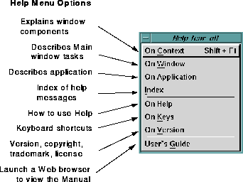

Ishmail offers a comprehensive
Help facility that provides help
messages for all window and menu components. Seven types of
help information are available. The figure "Help Pull-down
Menu" shows the available
Help options.

To get help while in the
Ishmail application, click the
Help
pull-down menu, then click on the appropriate help subject.
Ishmail's on-line Help system includes:
- QuickHelp messages in the message area of the window.
These pointer-sensitive hints help you understand the
purpose of the application and to use it more quickly and
efficiently.
- Help buttons for access to information on how to use
window features.
- A Help menu in the primary window of an application for
access to different types of information on the
application's features.
- An on-line (HTML) version of the User's Guide, which
can be accessed with a Web browser.
To choose an option in the
Help pull-down menu, either click on
the option, type its associated mnemonic (the underscored letter
in the option's name), or type its associated
Shift-function key
sequence.
Help menu options are:
- On
Context
- Explains window components such as menus and
buttons. When you select
On
Context, the pointer turns
into a question mark. To display the
Help message for a
specific component, place the question mark on the
component and click. A pop-up
Help Card appears with
concise information about the component and how to use
it.
TIP:
To see
On
Context help for a menu option, first
select the menu then click on the dotted line
at the top of the menu. This "tears off" the
menu so it stays displayed. Now, go to the
Help
menu, select
On
Context, bring the mouse
cursor back to the torn off menu, and click on
the option for which you want to see the Help
message.
- On
Window
- Describes the tasks you can perform from the window.
- On
Application
- Explains
Ishmail's purpose and basic capabilities, and
introduces important concepts and terms.
- Index
- Lists each of the application's components for which you
can get help.
- On
Help
- Describes the on-line Help system.
- On
Keys
- Details the application's keyboard shortcuts.
- On
Version
- Displays the version information about the current
application, including:
- Version number
- Operating system type
- Date and time stamp
Also shows copyright, trademark, and licensing
information.
- User's
Guide
- Your Web browser command is launched with the URL of
the on-line version of this manual.
See
Application-related Preferences for information on
specifying your Web browser command.
Another kind of help, called
QuickHelp, is available for most
window and menu components. If
QuickHelp is available for the
current component, a terse description of the component under
the pointer appears in the message area near the bottom of the
window. As the pointer is moved into different components, the
quick help message is updated.
Preceding Section: Sort Option
Following Section: Composition Window
Parent Section: Ishmail Main Window
Contents of Ishmail User's Guide